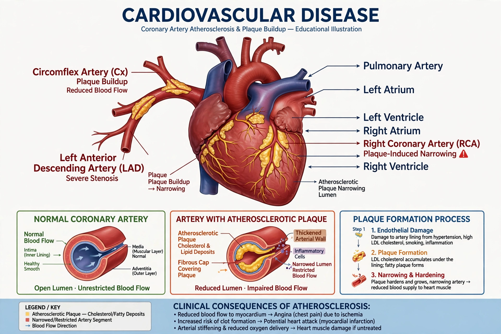

Cardiovascular diseases (CVDs) are a group of disorders of the heart and blood vessels. They are the leading cause of death globally. They include coronary artery disease, stroke, heart failure, rheumatic heart disease, congenital heart disease and peripheral arterial disease.

Cardiovascular diseaseMost cardiovascular disease results from atherosclerosis, promoted by hypertension, smoking, diabetes, abnormal lipids, obesity and inactivity. Conditions such as familial hypercholesterolaemia, assessed using the Simon Broome criteria, greatly raise cholesterol and early risk.
Prevention includes stopping smoking, a diet low in salt and saturated fat, physical activity, and medicines for blood pressure and cholesterol such as statins, ezetimibe and PCSK9 inhibitors. In severe lipid disorders lipoprotein apheresis may be used. Acute events are treated with reperfusion, surgery and rehabilitation.
An estimated 17–19 million deaths each year are attributed to cardiovascular diseases, roughly one third of all deaths worldwide, with the burden rising in low- and middle-income countries.